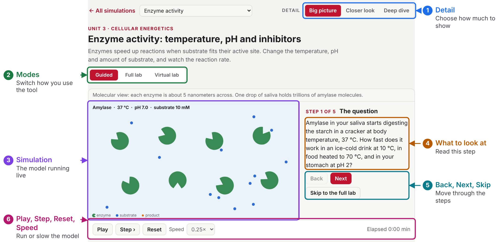
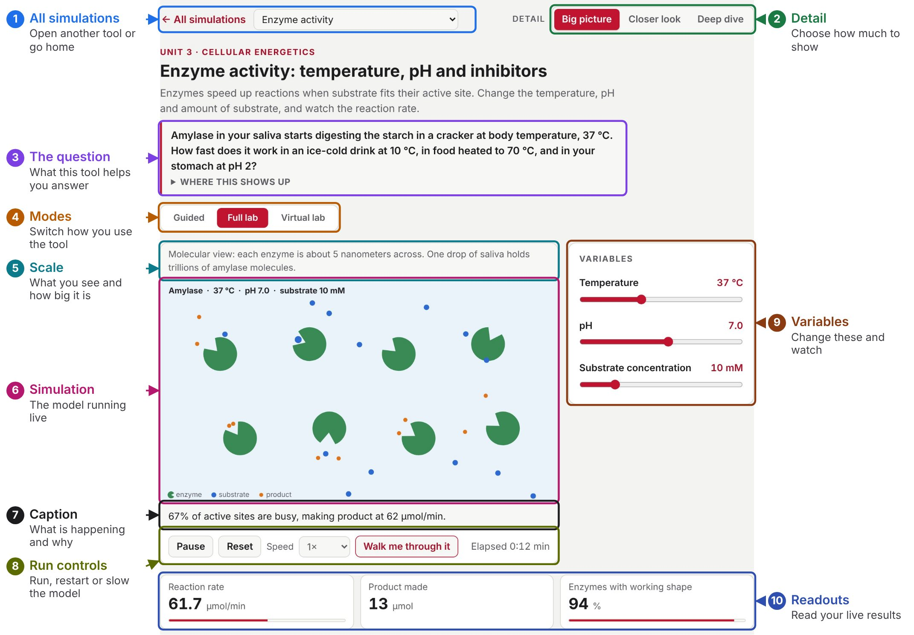
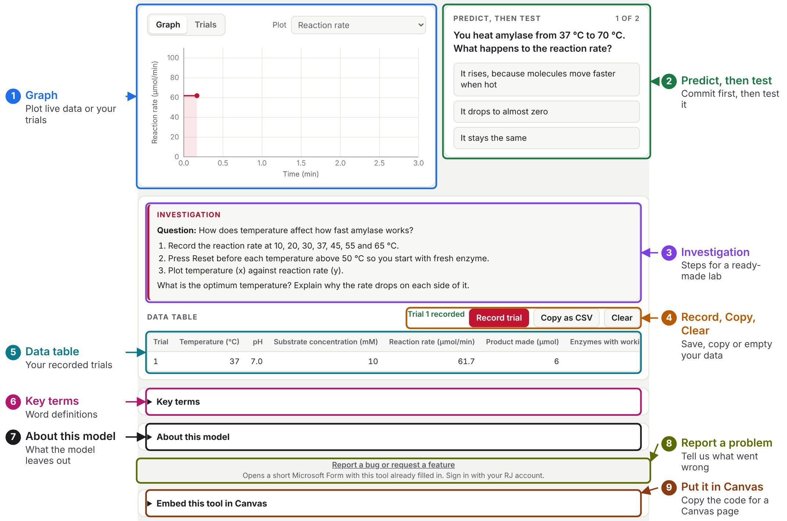
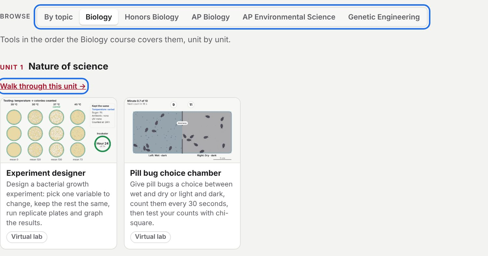
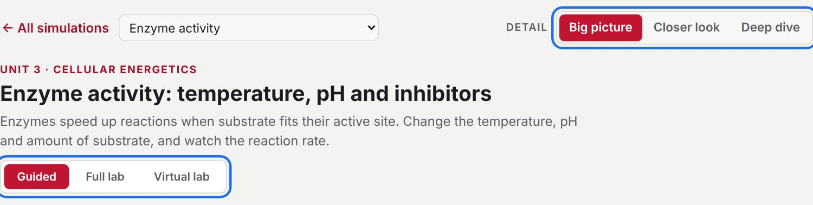
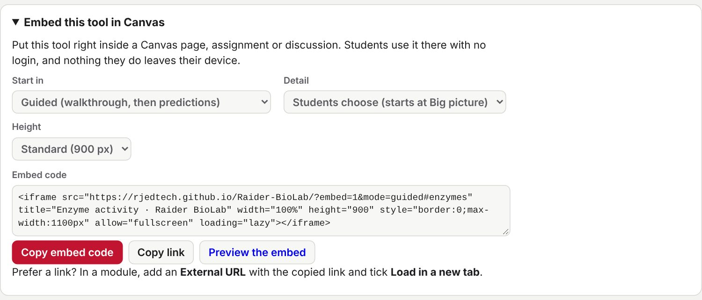
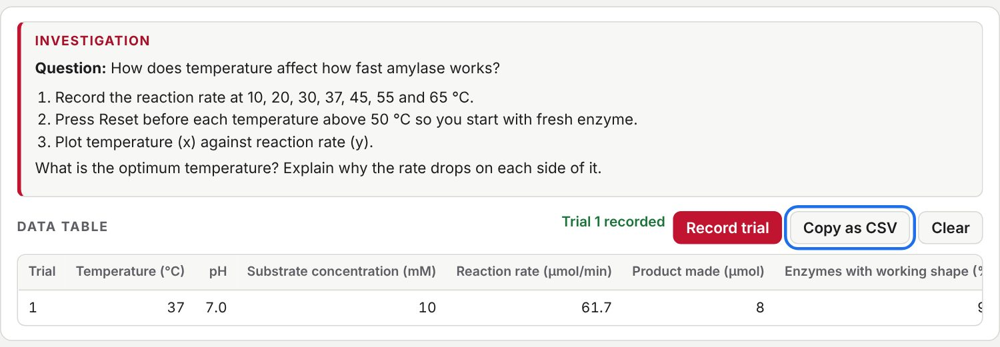
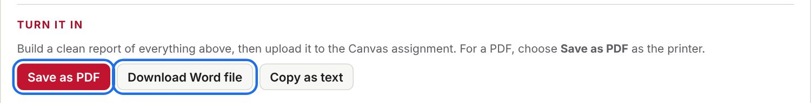

![RJ]()
Teacher guide
The same plan works for all 78 tools on this site. See what each part does, choose a goal, give students the guide sheet, and collect their work.
Print or edit for your class
Parts of a tool: labeled pictures that show what each part does.
Student guide sheet: two pages students fill in with any tool.
Parts of a tool
Every tool on this site uses the same layout, so these pictures work for all of them. Some tools add or leave out a part.
Guided mode
Every tool opens here. Students see one step at a time, then answer predictions one at a time.

- 1Detail
Changes how many names, controls and how much math students see. Any student can choose any level. - 2Mode buttons
Switch between Guided, Full lab and any other modes this tool has. - 3Simulation
The model running live. Guided mode dims the parts that are not being explained. - 4Step text
Explains this step. Step 1 is always the tool's real-world question. - 5Back, Next and Skip to the full lab
Move through the steps, or leave the walkthrough and open every control. - 6Play, Step, Reset and Speed
Play or pause the model, step it forward a moment at a time, start over, or slow it down.
Full lab: the bench
Students change the variables and watch the model respond.

- 1All simulations and tool menu
Go back to the home page or jump straight to another tool. - 2Detail
Changes how many names, controls and how much math students see. - 3The question
The real-world question this tool answers. Where this shows up opens real uses of the idea. - 4Mode buttons
Switch between Guided, Full lab and any other modes this tool has. - 5Scale line
Says what students are looking at and how big it really is. - 6Simulation
The model running live. Students watch this respond when a variable changes. - 7Live caption
Explains what is happening right now, and why. It changes with the variables. - 8Pause, Reset, Speed and Walk me through it
Pause or restart the model, slow it down to 0.1×, or open the guided tour. When paused, Step moves it forward a moment at a time. - 9Variables
The sliders and switches students change. The model responds right away. - 10Readouts
The live numbers from the model, with units. Students read their results here.
Full lab: data and support
Below the bench, students test predictions, collect data and check the model.

- 1Graph and Plot
Graph shows the live plot, and Plot chooses which reading it shows. Trials plots your recorded trials, using the x and y you choose. - 2Predict, then test
Students choose a prediction, then the tool runs the test and explains the result. - 3Investigation
A ready-made lab: the question, what to change and record, and what to explain. - 4Record trial, Copy as CSV and Clear
Record trial saves the current settings and readings as a row. Copy as CSV copies the table for Excel or Desmos. Clear empties it. - 5Data table
Every recorded trial. It stays in this browser on this device. - 6Key terms
Definitions of the words used in this tool. - 7About this model
What the model calculates and what it simplifies. - 8Report a bug or request a feature
Opens a short Microsoft Form with this tool already filled in. - 9Embed this tool in Canvas
Creates the code or link for a Canvas page, with pictures of each step.
The routine students follow
The guide sheet follows these five parts, in this order.
- Ask. Put the tool's real-world question in their own words.Find it: step 1 of Guided, or the box at the top of Full lab.
- Predict, then test. Commit to a prediction, then watch what happens.Find it: Guided, after the walkthrough, or the Predict, then test box in Full lab.
- Test. Change one variable at a time and record the trials.Find it: the Investigation box and data table in Full lab.
- Explain. Write a claim, the evidence from their data, and the reasoning.Find it: the guide sheet, or the conclusion in a Virtual lab.
- Question the model. Name what the simulation leaves out and connect it to the real world.Find it: About this model and Where this shows up, both in Full lab.
Short on time? Use parts 1, 2 and 5 with Guided mode.
Set up any tool in five steps
1. Find the tool
On the home page, go to Browse and choose your course. Tools appear unit by unit, in the order your course teaches them. Walk through this unit opens a unit's tools in order.

2. Set the detail level
Choose Detail at the top right. The model stays the same, but students see more names, controls and math at each level. Any student can switch levels.
| Detail | Fits |
|---|---|
| Big picture | Biology |
| Closer look | Honors Biology |
| Deep dive | AP Biology and AP Environmental Science |

3. Choose where students start
Match the mode to your goal. Not every tool has every mode.
| Your goal | Start in | Students | What you can collect |
|---|---|---|---|
| Introduce an idea | Guided every tool | Follow the walkthrough, then answer predictions one at a time | The guide sheet |
| Run an investigation | Full lab every tool | Change variables, record trials and graph the results | The guide sheet, or data from Copy as CSV |
| Cover an absence, make-up or pre-lab | Virtual lab 13 tools | Work through an RJ lab, read the instruments, enter their own data and answer the questions | A PDF or Word report uploaded to Canvas |
| Review for a test | Review so far on Hardy–Weinberg | Answer questions with worked steps, a button that sets the problem up in the lab, and links to released AP exam questions | Nothing is sent to you. Use it as practice. |
| Catch up on a missed class | Unit path every course unit | Walk through the unit's tools in order | The guide sheet, if you assign one |
4. Try it, then send it
Run what students will run, and open About this model in Full lab to see what it simplifies. Then open Embed this tool in Canvas at the bottom of the tool. Choose where it starts and its detail level, then copy the embed code or the link. The panel shows each Canvas step with a picture.

5. Collect the work
Nothing reaches you automatically. There are no student accounts, class views or grade passback, so decide how work comes back before students start.
- Guided, Full lab or Review: collect the guide sheet, as paper or as an upload to a Canvas assignment.
- Full lab data: students use Copy as CSV and paste the table into Excel or Desmos.
- Virtual lab: students finish at Turn it in, save a PDF or Word file, and upload it to your Canvas assignment.


Before you rely on it
- Work stays on one device. Trials and Virtual lab work save in that student's browser. They don't follow students to another computer, and clearing browser data erases them. Have students export a Virtual lab before they switch computers.
- The models are simplified. Results come from teaching models, not recorded experiments. Each tool's About this model lists its assumptions. Check any schematic art yourself before using it for an assessment.
- Virtual labs support hands-on labs. They help with absences, make-ups and practice, but students don't handle real equipment.
- Students can see the answers. Predictions and Review questions explain the answer after each attempt, so treat them as practice and not as graded assessments.
- A few tools skip a part. Some learning tools have no data table or Investigation box. Skip part 3 of the sheet for those.
- Student privacy. There are no logins, and student work stays on the device until the student exports it.
Found a problem? Report a bug or request a feature (Microsoft Form, RJ sign-in).
RJ Ed Tech · Raider BioLab